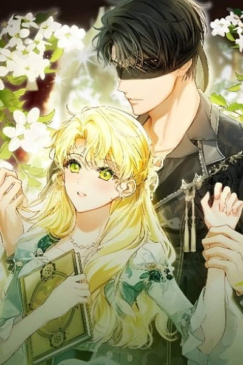

She volunteered to be the fiance of the feared blind Duke to save her family, never expecting the cold, mysterious nobleman to slowly dismantle every wall she built around her heart. A beautiful story of trust and love growing in the dark.
Showing latest chapters. View all chapters on Batosi →
| Type | Manhwa |
|---|---|
| Status | Ongoing |
| Rating | 8.6 / 10 |
| Genre | Romance, Historical, Fantasy |
| Read On | Batosi (xbato.co.uk) |